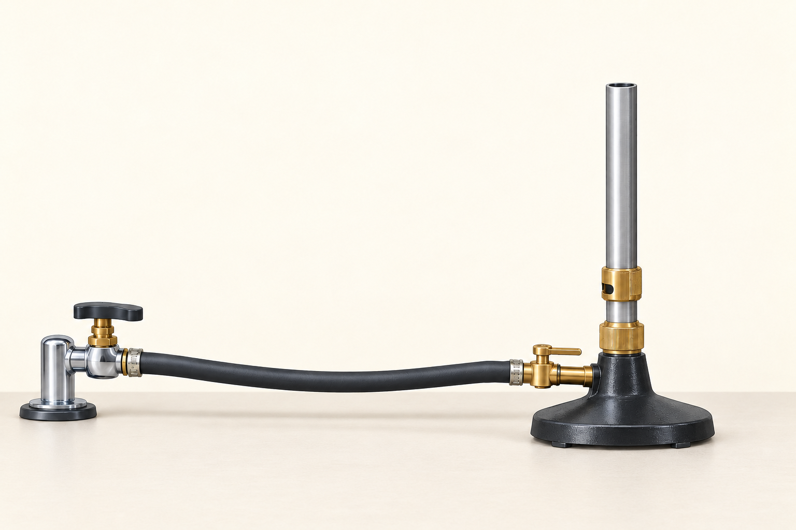
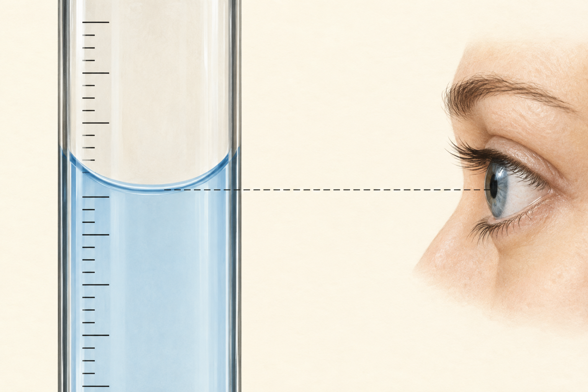
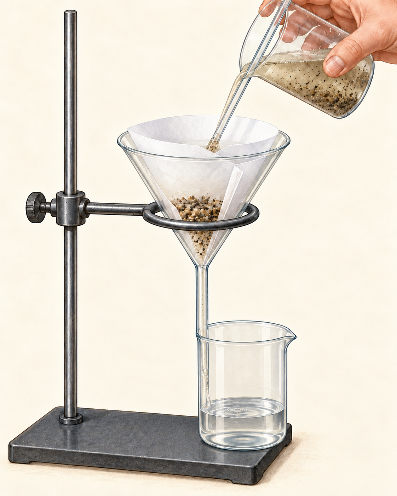

中学1年 理科
実験器具の使い方
実験器具の
使い方
使い方

操作の順番と、その理由
安全の確認
実験を始める前に
保護眼鏡を着け、長い髪をまとめる
燃えやすい物を離し、換気を確認する
器具の破損・接続・水平を確かめる
異常があれば、操作を止めて先生へ
ガスバーナー
ガスバーナーの各部
点火用の火を準備
元栓：ガスの供給を開閉する
コック：器具側でガスを開閉する
下のねじ：ガスの量を調節する
上のねじ：入る空気を調節する
上から見た回転の拡大図
ねじが回ると、通り道が開く
空気調節ねじ
ガス調節ねじ
左回りに少し緩めると、開く
右回りに戻すと、閉じる
空気を調節するときは、下のガス調節ねじを押さえる
経路の模式図
ガスは、閉じたところで止まる
点火用の火を準備
元栓を開くと、コックの手前まで
コックを開くと、ガス調節ねじまで
ガス調節ねじを開くと、筒を上へ
ガスバーナー
火をつける順番
点火用の火を準備
元栓を閉じたまま、2つのねじが閉じていることを確認
元栓を開く
コックがある型は、コックを開く
点火用の火をつけ、筒の口へ斜め下から近づける
ガス調節ねじを少しずつ開き、点火
ガスバーナー
炎の大きさと、空気の量
点火用の火を準備
ガス調節ねじで、必要な炎の大きさにする
下のねじを押さえ、空気調節ねじを少しずつ開く
安定した青い炎に調節する
ガスバーナー
火を消す順番
点火用の火を準備
下のねじを押さえ、空気調節ねじを閉じる
ガス調節ねじを閉じ、消火する
コックを閉じる
元栓を閉じる
確認
火とガス、先に用意するのは？
点火用の火を準備
ガスを出してから、マッチを探してよい？
火を先に準備する。
未点火のガスを出し続けない。
未点火のガスを出し続けない。
試験管
試験管で液体を温める
液体は試験管の約1/5〜1/4まで
試験管ばさみで上部を持ち、口を人のいない方向へ
一か所だけを熱し続けず、小刻みに動かす
口をのぞかず、栓をして加熱しない
試験管
固体の加熱で、水が生じるとき
試験管の口を、少し低くして固定する
生じた水が、熱い底へ流れ戻るのを防ぐ
急な温度変化による、ガラスの破損を防ぐ
何gあるか、調べる
電子天秤：物質の質量をはかる
容器を使うときは、先に空の容器を載せる
ゼロ／風袋ボタンで、表示を0.0 gにする
はかりたい物を、静かに載せる
表示が安定してから読む：27.4 g
電子天秤の風袋引き
容器ごと載っているのに、なぜ0？
容器を載せたまま、表示だけを0にする
その後に加えた物質の質量だけが表示される
決めた量を、用意する
電子天秤：薬品を5.0 gはかり取る
空の容器を載せて、表示を0.0 gにする
薬さじで少しずつ加える
5.0 gに近づいたら、さらに少量ずつ
表示が安定して5.0 gになったら、止める
上皿天秤
上皿天秤：最初につり合いを確認
水平で安定した台に置く
指針が左右に同じ程度振れるか確かめる
偏るときは、調節ねじでつり合いを整える
分銅は、ピンセットでつまむ
何gあるか、調べる
上皿天秤：物質の質量をはかる
一方の皿に、はかりたい物を載せる
他方に分銅を置き、重すぎたら小さい分銅へ
軽ければ、より小さい分銅を足して調整する
つり合ったときの分銅の合計が、物質の質量
上皿天秤の測定例
分銅の合計を読む
皿に載っている分銅を、全部確かめる
20＋5＋2＝27 g
物質の質量も、27 g
決めた量を、用意する
上皿天秤：薬品を5 gはかり取る
両方の皿に同じ質量の薬包紙を敷き、つり合いを確認
一方に、目標の5 gの分銅を先に載せる
他方の薬包紙へ、薬品を少しずつ加える
指針が左右に等しく振れたら、5 g
覚えること
「はかる」と「はかり取る」
質量をはかる
物質は決まっている
何gあるかを調べる決めた質量をはかり取る
必要な質量は決まっている
薬品の量を合わせる体積をはかる
メスシリンダーの読み方

水平な台に置き、1目盛りの大きさを確認
水面と同じ高さから、真横に見る
水面のへこんだ部分の底を読む
最小目盛りの1/10まで、目分量で読む
少量の液体を移す
こまごめピペットの使い方
液体に入れる前に、ゴム球を押す
先端を液に入れ、力を緩めて吸い上げる
先端を下に向けたまま運び、少しずつ滴下
ろうと・ろ紙・ガラス棒
ろ過の器具の組み方

ろ紙を折って開き、ろうとに密着させる
ガラス棒を伝わせて、静かに注ぐ
液面を、ろ紙のふちより下に保つ
ろうとの足の長い側を、受ける容器の内壁に付ける
加熱して取り出す
蒸発皿で、水を蒸発させる

保護眼鏡を着け、顔を近づけない
液が少なくなったら加熱を止め、余熱を使う
熱い皿は直接持たず、十分に冷まして扱う
確認
必要な器具を選ぼう
石の質量を調べる … 電子天秤／上皿天秤
食塩を5 g用意する … 容器・薬包紙＋天秤
水の体積を読む … メスシリンダー
砂を水から分ける … ろうと・ろ紙
まとめ
操作には、順番と理由がある
火を先に準備してから、ガスを出す
「何gか調べる」と「決めた量を用意する」を分ける
器具と目の位置、熱い部分、人の向きを確認する